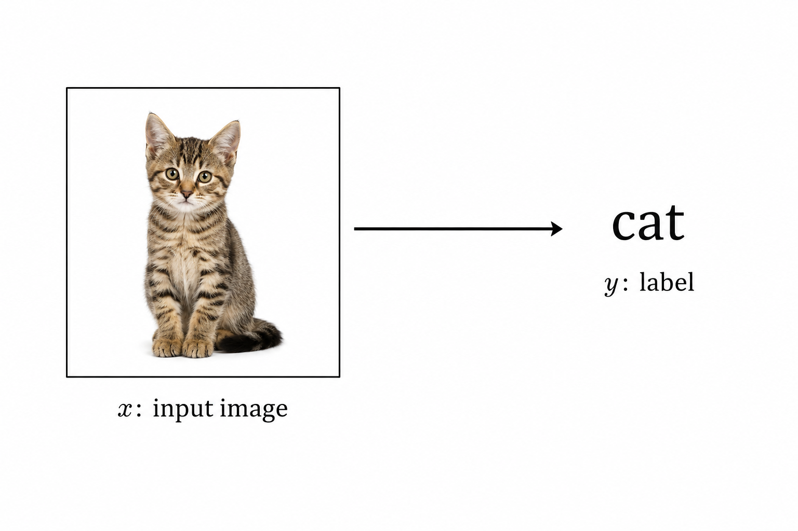
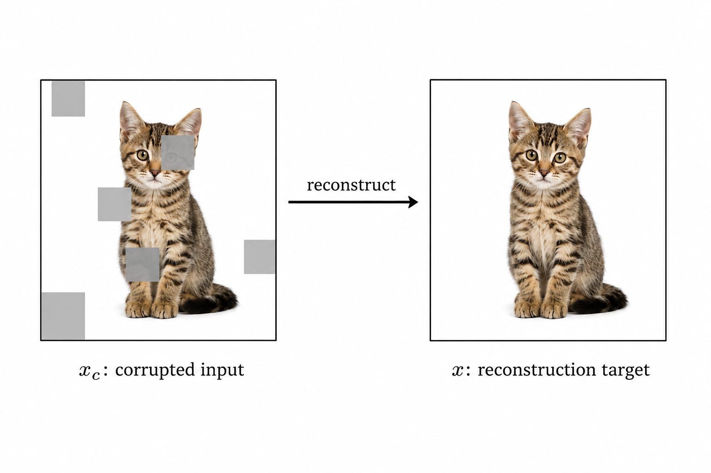
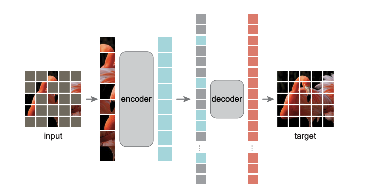
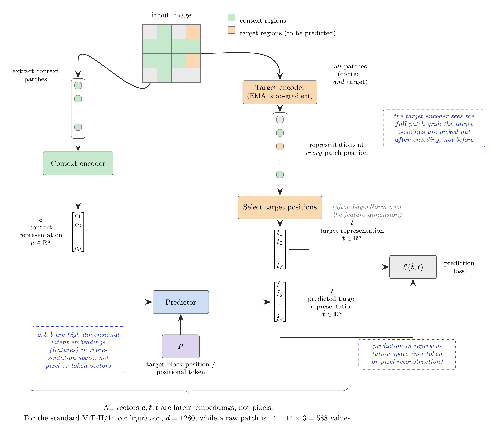
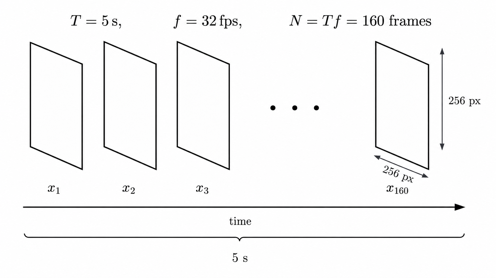
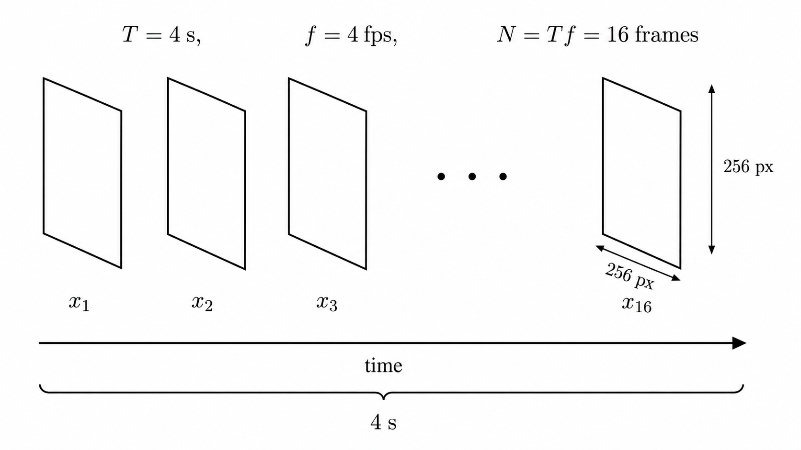
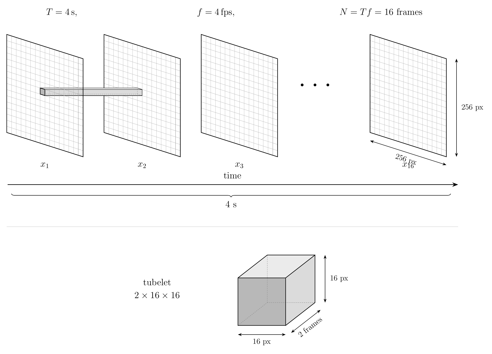
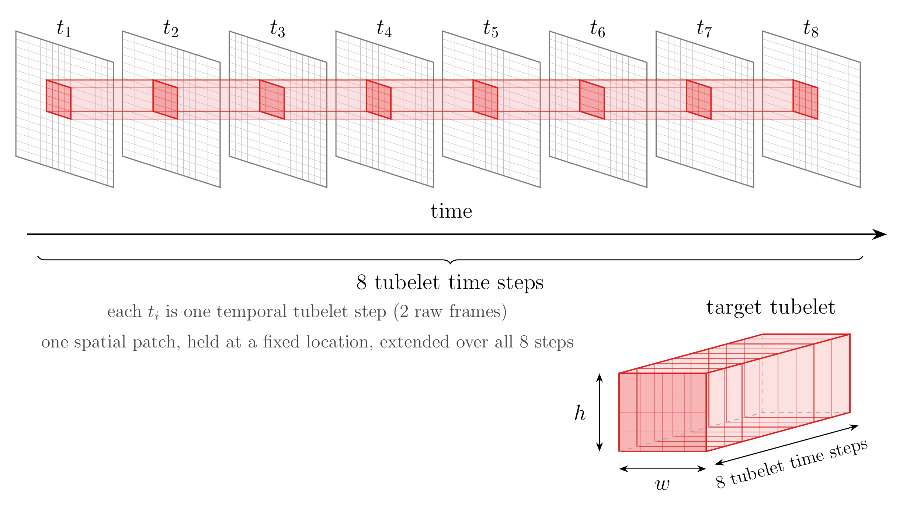

v-jepa-walkthrough
How to Read this Blog
This blog contains many sections, and is fairly long. The main sections are an overview of SSL, I-JEPA and V-JEPA walk through. Self Supervised Learning is an interesting training paradigm and has differences with respect to supervised learning that are worth pointing out. Once we build a fair intuition for SSL, we introduce the I-JEPA architecture, since this is easier to visualize in some sense than V-JEPA and the intuition transfers fairly neatly. These sections (for the most part) are designed to be self contained (though there will be occasional references to previous sections) so if you’re familiar with one section or directly want to jump into V-JEPA you should be able to do so (because of my attempt to isolate these sections, certain points may be repeated multiple times). Also, if you’re interested, in the appendix there is a section on representational collapse and how JEPA side-steps this.
A Brief Overview of Self Supervised Learning (SSL)
Supervised Learning
In supervised learning, generally speaking, we have two parts input data \(x\) and a target \(y\). The model takes in \(x\) and predicts \(y\). A good example for supervised learning are image classification methods, where the model takes in an image \(x\) and an annotated label \(y\) and tries to predict it.

Self Supervised Learning
However, JEPA has a different training paradigm called self supervised learning (SSL). In SSL, we don’t have any labels, only the input \(x\) the learning signal is derived entirely from the data itself, hence the “self”. This is beneficial because getting annotated data in the real world, is often messy, hard and expensive.
In SSL, we corrupt some part of the input data, so \(x\) becomes \(x_c\) where the subscript \(c\) denotes the corrupted variant. This corrupted version becomes the input during training, and the model is asked to reconstruct the corrupted parts. Typically, the loss function is set up in a way that measures how well the model recovers the original from the corrupted input. Some prominent examples of models/architectures trained under the SSL paradigm are BERT, masked auto-encoders, contrastive learning.

I should note that corrupting the input, is just an example and contrastive learning works a little differently by creating different augmentations/views of the input data and pulling together views of the same sample, and pushing different samples apart. However, for the purposes of this blogpost we’ll primarily use masking/corruption as a mental model for SSL because that ties in neatly with what JEPA is trying to do.
Before diving into JEPA, let’s take a brief look at Vision Masked Autoencoders (MAE). Here, the model takes in a masked version of the image, and tries to reconstruct the pixels of the masked portion (see image below).1

This is exactly the SSL paradigm we’ve been discussing. Reading the figure left to right: in the input, the grey squares are the masked-out patches, and the remaining visible patches are the context. Only those visible patches go into the encoder, which produces the cyan column; these are latent representations, not pixels. The grey squares that reappear alongside them are the decoder’s mask tokens, placeholders standing in for the positions to be filled. The decoder consumes both and produces the pixel reconstruction on the right.
I-JEPA (Image JEPA)
While I-JEPA is not directly related to this blog post, I thought it would be useful to include a brief overview of I-JEPA. The motivation behind this, is that images are static and are somewhat easier to conceptualize than videos (because of the added dimension). Once we build the intuition for the I-JEPA case, it should hopefully transfer over neatly with some minor modifications.
Architecture Overview
In the previous section we briefly saw how MAE reconstructs the pixels and that JEPA proposes making predictions in the latent space instead of reconstructing the pixels. Architecturally, I-JEPA would look something like this:

There are three main parts to the JEPA architecture: context encoder, target encoder and predictor network. The context encoder takes the unmasked part of image and converts it into a context embedding \(c\) . The target encode gets the whole image and converts it to a target embedding \(t\) (more on this later). The predictor network then takes \((c,p)\) as input where \(c\) is the context embedding, and \(p\) represents the position of the masked tokens to be predicted and outputs \(\hat{t}\). The loss is then calculated with respect to \(t, \hat{t}\).
Training Notes
During training, we follow the architecture shown above, with a few important details concerning how the input image is prepared. Rather than always passing the entire source image to the model, the preprocessing pipeline first selects a random rectangular crop (note that I-JEPA relies entirely on masking, and does not use multi-view augmentations unlike other SSL models).
Three quantities are relevant here: the output crop size, the crop-area fraction, and the crop aspect ratio. The output size is fixed at \(224 \times 224\). The area fraction, denoted by \(a\), determines how much of the original image is included before resizing and is sampled from the range \([0.3, 1.0]\). The aspect ratio, denoted by \(r\), determines the crop’s shape and is defined as the ratio of its width to its height:
\[ r = \frac{w}{h} \]
Suppose the original image has height \(H\) and width \(W\). The desired crop area, measured in pixels, is
\[ T = aHW \]
Given \(T\) and \(r\), the crop dimensions are calculated approximately as
\[ \begin{aligned} w &= \operatorname{round}\left(\sqrt{Tr}\right), \\ h &= \operatorname{round}\left(\sqrt{\frac{T}{r}}\right). \end{aligned} \]
Once the crop dimensions have been determined, we randomly select a valid top-left position:
\[ \begin{aligned} \text{left} &\in \{0, \ldots, W-w\}, \\ \text{top} &\in \{0, \ldots, H-h\}. \end{aligned} \]
The resulting rectangular crop is therefore
\[ \text{image} \left[ \text{top}:\text{top}+h,\; \text{left}:\text{left}+w \right]. \]
Finally, the crop is resized to \(224 \times 224\). In the standard ViT-H/14 configuration, the image is then divided into non-overlapping \(14 \times 14\) patches, producing \(256\) patches arranged as a \(16 \times 16\) grid. Each patch is projected into a token representation.
I-JEPA must now determine which token positions will provide context and which will serve as prediction targets. Rather than selecting individual target tokens at random, it selects contiguous rectangular regions, called target blocks, on the \(16 \times 16\) token grid.
The standard configuration uses four target blocks. I-JEPA samples a target-block area and aspect ratio and uses them to calculate the block’s height and width in grid cells. > In this implementation, the resulting block size is shared by all four target blocks — and in fact by every image in the batch, since the size is drawn once per training iteration from a seeded generator. Only the locations vary: each block in each image gets its own. Every token inside a target rectangle becomes a prediction target. You might notice that this procedure feels familiar. Sampling the target and context blocks is really the same trick we used earlier when cropping the input image: we choose how much area the region should cover, choose an aspect ratio that fixes its shape, use those to work out a concrete rectangle, and then place that rectangle at a random location. The only thing that has changed is where we apply the idea. Earlier it operated on the raw image in pixel space; here the very same recipe runs on the \(16 \times 16\) grid of patch tokens instead, once to lay down the target blocks and once to lay down the context block.
Because the target-block locations are sampled separately, the four blocks may overlap. Consequently, the same token position can appear in more than one target block. Thus, “four targets” refers to four rectangular groups of patch tokens, not four individual patches.
The context region is sampled as a separate, much larger block, covering 85–100% of the grid. Any positions that overlap with the target blocks are removed from the context. The resulting context is therefore not necessarily the complement of the targets, and some tokens may be used by neither branch. Removing the overlapping positions ensures that the context encoder cannot directly observe the tokens it is being asked to predict.
Before the transformer layers process the tokens, fixed two-dimensional sine-cosine positional embeddings are added. These embeddings identify where each token originated on the \(16 \times 16\) grid.
The target and context branches then operate differently. The target encoder processes the complete grid of \(256\) positioned tokens. Only after the full target-encoder forward pass are the representations layer-normalized over the feature dimension, and the representations at the target locations selected. In contrast, the context encoder processes only the positioned context tokens. That layer-norm is a small line of code with outsized importance. It strips the target of any freely chosen scale or offset, which removes one of the easiest routes to a trivial solution. It comes up again in the appendix.
The predictor receives the encoded context representations together with learned placeholder tokens for the target positions. Each placeholder consists of a shared learned mask token combined with a positional embedding identifying the location it represents. Since one placeholder is provided for every token position in a target block, the complete set of placeholders communicates both the location and shape of the region to be predicted.
Using the context representations and positional placeholders, the predictor produces one representation for each target position. These predictions are then compared with the corresponding representations produced by the target encoder. The comparison is done via a smooth L1 loss, also known as the Huber loss: it behaves like L2 for small errors and like L1 for large ones, which keeps it differentiable at zero while staying robust to outliers.
Now, keen readers might be be wondering, what’s stopping the model from assigning each masked patch, the same input? Essentially, you’re asking the model to create a representation in a high-dimensional space, and then predict that representation (in a way it’s like asking a student to write their own questions for an exam and then answer them). If we trained the entire model using backpropagation, this is exactly what would happen. The target encoder would map all the patches to the same point in the embedding space, and then the predictor network would just predict that point, obtaining a loss of zero, but learning nothing useful. That is a serious possibility with self-supervised learning and is a problem called representational collapse, which will be discussed in more detail in the appendix to avoid deviating from the main focus of the blog. Interested readers are encouraged to read that section.
Inference
Inference is conceptually a lot simpler. We pass in an image of any size; we make it a 224 by 224 image using the same preprocessing steps mentioned earlier. Once we have this resized image, we have 256 patch tokens that get sent into the target encoder. Note this differs from training, which used a random resized crop; at inference, we want a single deterministic view, not a sample from a distribution of crops. (The I-JEPA repository ships pretraining code only, so this describes standard practice for evaluating the released checkpoints rather than code in the repo.) We then use these encoded representations for downstream tasks. We no longer need the context encoder and predictor network during inference.
V-JEPA (Video JEPA)
Training Notes
To simplify ease of explanation we make the following assumptions: a) We ignore batches. Batches don’t change the conceptual picture; they just batch together multiple inputs. b) We ignore the color channel for now because it adds another dimensional variable to keep track of.
For example sake, let’s say we have a 5 second video, shot at 32fps. That means our video can be split into 160 frames, each of which is 256 by 256. Visually, we can represent it like this:

So our video can be written as \(160 \times 256 \times 256\).
Note that we don’t pass in our entire video to the model. We first create a sample. To do this, the pipeline first sets the number of frames we want in the sample. The V-JEPA 2 repository sets this to 16 so thats what we’ll be working with. It also sets the target rate fps to 4. So in our example, the sample covers 4 seconds of the original video (16 frames spread across those 4 seconds), not a full-framerate clip, but in general the length of the video (in seconds) is given by \(\text{target frames}/\text{target fps}\) .

Note that the 4 second window of our sample need not start at 0, so we define a term called the slack which is \(\text{source duration} - \text{target duration}\). If the slack is positive, then the start position is picked up randomly from that slack. If the slack is zero, then the window must start at \(0\). If the slack is negative, no full window exists, so we need to pad. For the purposes of our example, the window can start anywhere between 0 and 1 second into the video, chosen randomly. Of course, longer videos have more potential start positions. Once the start position is chosen, the 16 frames are chosen at regularly spaced intervals. In our example this spacing works out to \(\text{source fps}/\text{target fps} = 32/4 = 8\), so we take every 8th source frame within the window (frames 0, 8, 16, and so on).
What we just did was standardizing this across the temporal dimension, and now we normalize the spatial dimensions. The pipeline does this by resizing frame to \(256 \times 256\), but the example we’ve been working already has the correct dimension here, so we can move on.
Now that we’ve formed our sample, we need to form our input to the model. The input in the V-JEPA model, is what we call a tubelet. A tubelet is a patch of a frame, tracked across two sequential frames in a given sample. Note that these are not necessarily adjacent frames in the input video, but they are adjacent in our sample. Note that each frame, can be represented as a grid of 256 patches, each patch being \(16 \times 16\). This patch, tracked across two frames forms a tubelet. So for our example then we have \(8 \times 16 \times 16\) tubelets each tubelet is \(2 \times 16 \times 16\).
Visually, w e can represent a tubelet like this:

Now, we flatten this tubelet and pass it through a linear projection to create our input vector. As of now, this has no positional representation.
In the original V-JEPA, this is where a fixed sinusoidal positional encoding would get added directly to the token embedding. V-JEPA 2’s released models don’t do this; instead, they use RoPE (Rotary Position Embeddings). Rather than encoding position once, additively, at the embedding stage, RoPE injects positional information inside every attention layer by rotating the query and key vectors according to each token’s (time, height, width) coordinates. We won’t get into the mechanics of RoPE here since that’s not the focus of this post; the important point for this walkthrough is just where position enters the model: not as a vector added to the input, but as an operation applied inside attention, at every layer.
If you’re interested in learning more about RoPE, here’s a video I found helpful.2
Now we have 2048 tokens, with positional information encoded.
Now that we have all the positions encoded, we’re ready to create our target and context patches. In order to do that, we take random spatial patches and form tubes that span over the temporal frames (the temporal frame depth is something that we configure, but the shipped V-JEPA 2 implementation spans all 8 tubelets). The image here should make this clearer:

To form the target patches, we set a configurable parameter representing the number of blocks we form (the shipped V-JEPA implementation sets this to 8). To form each block’s spatial extent, we use a strategy similar to I-JEPA, starting from an area and an aspect ratio and combining it with a sampled temporal extent, giving a 3D tube. To avoid confusion, note that the tubelet extends across frames, but the tubes extend across the tubelets. We stamp several such tubes at random positions; their union is the target region, and everything not masked out serves as context (V-JEPA 2 actually applies two such masks per sample: one with 8 small tubes covering roughly 15% of the spatial grid each, and one with 2 large tubes covering roughly 70% each). Essentially, the context is the complement of the union of the mask.
From here, the process is similar to I-JEPA, and the effort we put in earlier finally pays off here. For a quick summary, the target encoder sees all tokens; the context encoder only sees the context tokens; and the predictor network then takes the context encoder output along with positions and predicts the target, which is compared with the output of the target encoder. As in I-JEPA, each target position is supplied to the predictor as a learned placeholder token, but two details differ. V-JEPA 2’s predictor holds a separate mask token for each mask configuration — two of them, matching the two masks above — rather than one shared token. And because the model uses rotary position embeddings, the placeholder carries no added positional embedding; its position enters through the rotation applied inside attention.The comparison is done via the L1 loss. Note this comparison happens in representation space, not pixel space, which is the latent-prediction idea from earlier made concrete. Note that the target encoder isn’t a separate network, it’s a slowly-moving copy of the context encoder (updated as a running average of its weights rather than by gradients). The mechanics of this update, and why it’s what prevents representational collapse, are in the appendix.
Inference
The learnings from I-JEPA also carry forward here during inference. The predictor network is discarded, and the target encoder is used as a feature extractor.
Sources
Appendix
Representational Collapse
To roughly see why this happens, consider the following abstraction. - \(c\) = output of context encoder - \(t\) = output of the target encoder - \(\hat{t} = f(c,p)\); the output of the predictor network, where c is the context and p is the positional information. - \(l = g(\hat{t}, t)\) where g is out loss function (could be \(L_1 \text{ or } L_2\))
Now, our loss \(l\) is minimized when \(l = 0\) which occurs at \(\hat{t} = t\). Now, this has to hold across all inputs simultaneously and one way for the model to do that is to map all inputs to the same point in embedding space. This way the model achieves minimum loss but learns nothing useful in the process.
Note that this is not a problem that the MAE faces, since the MAE is asked to predict directly at the pixel level, other SSL methods are vulnerable to their version of representational collapse.
To address this problem, there’s a method called exponential moving average (EMA). With this modification, the target encoder doesn’t actually get updated via backpropagation. Instead, the weights get updated using an exponential moving average.
The main method was proposed in the paper titled ““.